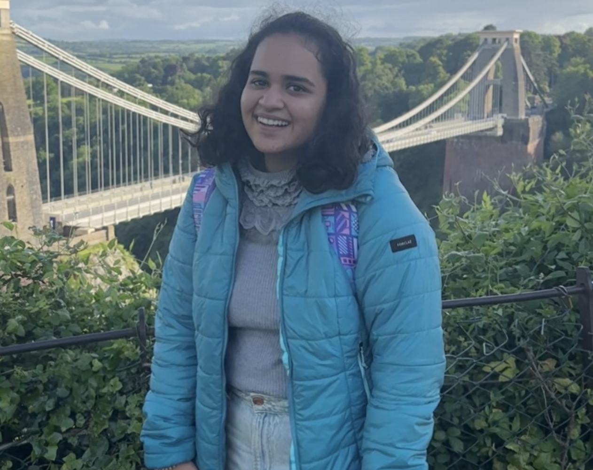
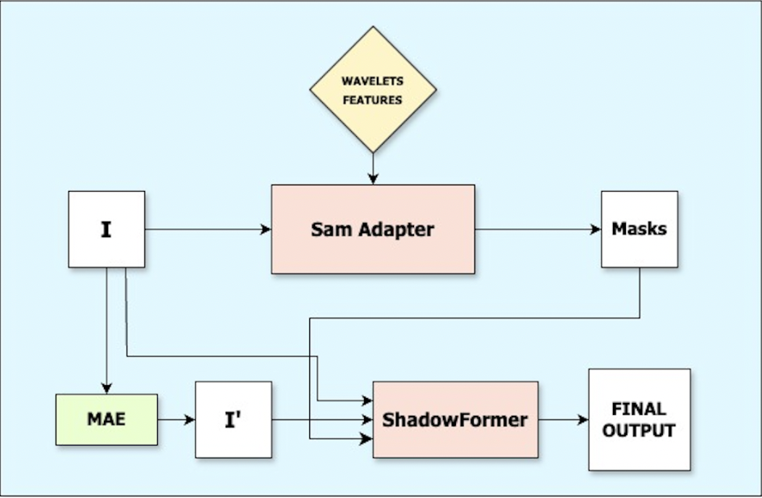

|
Junior undergraduate at the Indian Institute of Technology Gandhinagar, majoring in Electrical Engineering with a minor in Artificial Intelligence. I focus on leveraging Machine Learning, Deep Learning, and Computer Vision to solve complex challenges. Currently preparing to join Microsoft R&D as a Data Science Intern in Summer 2025. Previously, I worked on medical imaging projects under Dr. Vinay Namboodiri (University of Bath) and shadow segmentation under Dr. Shanmuganathan Raman (IIT Gandhinagar). Email / Google Scholar / GitHub / LinkedIn |
 |
Publications
.png)
|
Aadya Arora, Vinay Namboodiri ICASSP 2025 With the popularity of foundational models, parameter efficient fine tuning has become the defacto approach to leverage pretrained models to perform downstream tasks. Taking inspiration from recent advances in large language models, Visual Prompt Tuning, and similar techniques, learn an additional prompt to efficiently finetune a pretrained vision foundational model. However, we observe that such prompting is insufficient for fine-grained visual classification tasks such as medical image classification, where there is large inter-class variance, and small intra-class variance. Hence, in this paper we propose to leverage advanced segmentation capabilities of Segment Anything Model 2 (SAM2) as a visual prompting cue to help visual encoder in the CLIP (Contrastive Language-Image Pretraining) by guiding the attention in CLIP visual encoder to relevant regions in the image. This helps the model to focus on highly discriminative regions, without getting distracted from visually similar background features, an essential requirement in a fewshot, finegrained classification setting. We evaluate our method on diverse medical datasets including X-rays, CT scans, and MRI images, and report an accuracy of (71%, 81%, 86%, 58%) from the proposed approach on (COVID, lung-disease, brain-tumor, breast-cancer) datasets against (66\%, 70\%, 68\%, 29\%) from a pretrained CLIP model after fewshot training. The proposed approach also allows to obtain interpretable explanation for the classification performance through the localization obtained using segmentation. Paper |
|  |
Aadya Arora, Shanmuganathan Raman ICVGIP 2024 Shadow removal and segmentation remain challenging tasks in computer vision, particularly in complex real-world scenarios. This study presents a novel approach that enhances the ShadowFormer model by incorporating Masked Autoencoder (MAE) priors and Fast Fourier Convolution (FFC) blocks, leading to significantly faster convergence and improved performance. We introduce key innovations: (1) integration of MAE priors trained on Places2 dataset for better context understanding, (2) adoption of Haar wavelet features for enhanced edge detection and multi-scale analysis, and (3) implementation of a modified SAM Adapter for robust shadow segmentation. Extensive experiments on the challenging DESOBA dataset demonstrate that our approach achieves state-of-the-art results, with notable improvements in both convergence speed and shadow removal quality. Paper |
Selected Projects
-
Open Vocabulary Few Shot Referral Image Segmentation (May ’24 - July ’24)
Advisor: Professor Vinay Namboodiri, University Of Bath
- Implemented adapters with HIPIE (NeurIPs’23) to partition images into semantic regions driven by diverse text descriptions.
- Achieved a mIoU score of 85.148 (+2 than state-of-the-art) on RefCOCO and RefCOCO+.
- Investigated visual prompts to enhance segmentation on complex datasets, showcasing robustness.
-
Advancing Autonomous Driving Systems for Indian Roads (Dec ’23 - Jan ’24)
Advisors: Prof. CV Jawahar, IIIT Hyderabad and Prof. Vineeth N. Balusubramaniam, IIT Hyderabad
- Developed robust solutions to bolster autonomous driving systems amidst the unpredictable nature of Indian roads.
- Designed a comprehensive pipeline utilizing diverse Indian driving datasets to improve deep-learning-based object detection.
-
NextCharacterPredictor (March ’24 - April ’24)
Advisor: Professor Nipun Batra, IIT Gandhinagar
- Developed an MLP-based next character prediction model trained on several famous corpora.
- Experimented with embedding dimensions and model architecture sizes to optimize prediction accuracy.
-
Human Activity Recognition (HAR) (Jan ’24 - Feb ’24)
Advisor: Professor Nipun Batra, IIT Gandhinagar
- Utilized the UCI-HAR dataset capturing activities of thirty subjects.
- Classified six activities: walking, sitting, standing, and three types of running.
- Implemented advanced preprocessing and feature extraction techniques to improve classification accuracy.
-
Data Narrative: Exploring and Analyzing Datasets (Jan ’23 - April ’23)
Advisor: Professor Shanmuganathan Raman, IIT Gandhinagar
- Performed statistical analysis on various datasets, optimizing parameters and visualizing data trends.
- Computed key statistical measures to extract actionable insights using Python libraries.
- Crafted comprehensive data narratives to explore scientific questions and hypotheses.
Skills
- Programming: Python, C, C++
- Tools: MATLAB, TensorFlow, PyTorch, OpenCV
- Deep Learning: CNNs, ViT, SAM, CLIP, DeepLabv3+
Positions of Responsibility
- Teaching Assistant: Machine Learning, IIT Gandhinagar (Aug ’24 - Ongoing)
- Coordinator: Career Guidance, IIT Gandhinagar (Aug ’24 - Ongoing)
- Public Relations Executive: Blithchron, IITGN (Nov ’23 - Mar ’24)